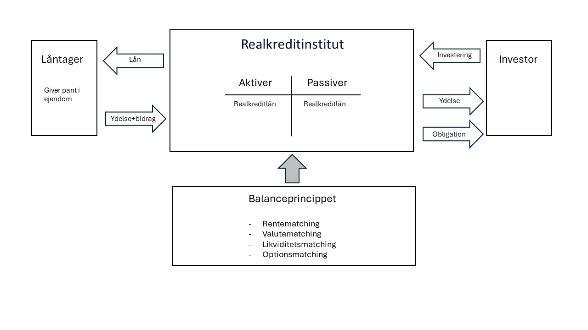
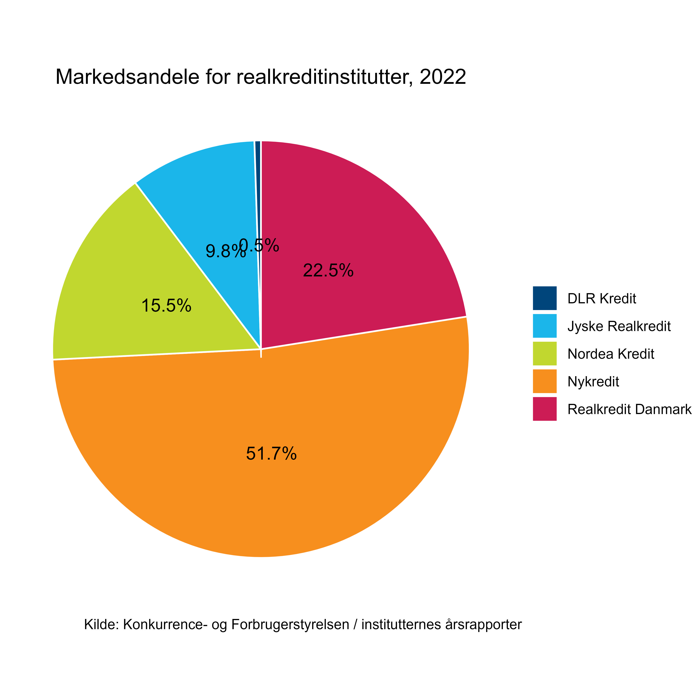
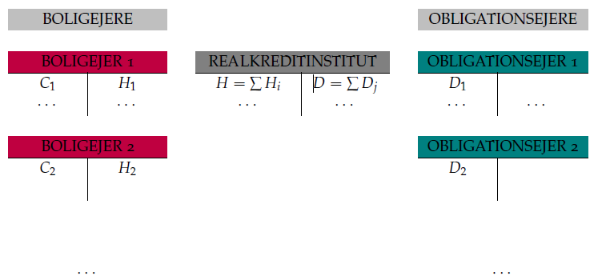
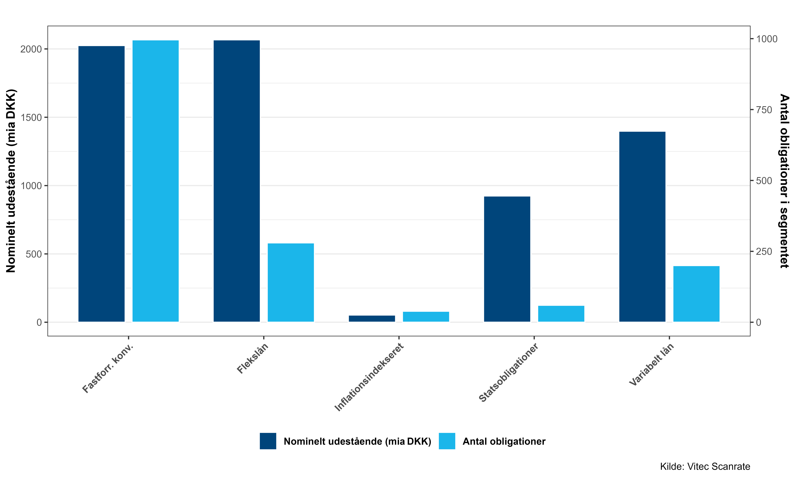
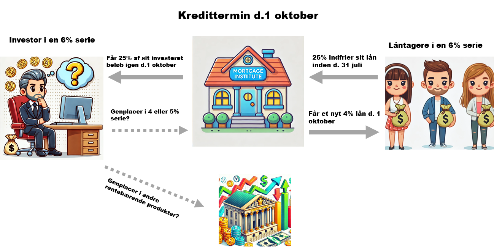
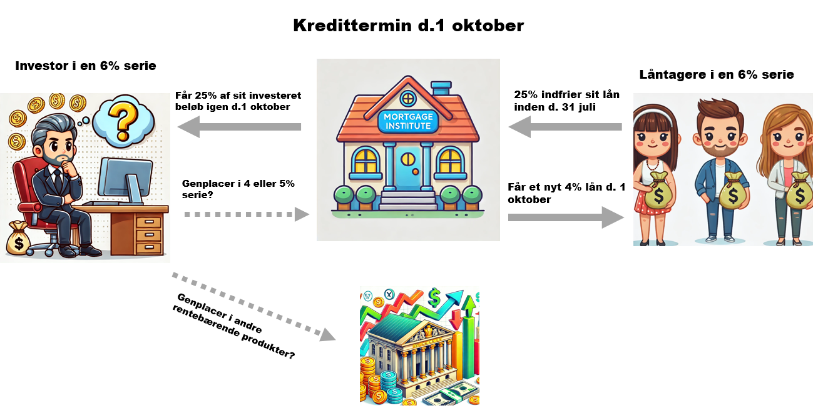
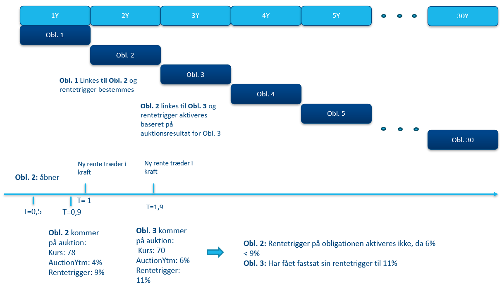
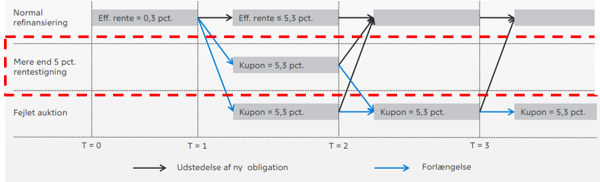

Det danske realkreditmarked
Historie, regulering og produkter
Niklas Lehmann Jensen
Introduktion
Læringsmål
- Forstå det danske realkreditsystems balanceprincip
- Kende de centrale aktører og institutternes rolle
- Få indsigt i den lovgivningsmæssige ramme (LTV, tilsynsdiamant, covered bonds)
- Anvende viden om markedets opbygning og kursdannelse
- Skelne mellem forskellige obligationstyper (fastforrentede, flekslån, floaters)
- Beregne konsekvenser af fx flekslån og konverteringseksempler
Baggrund: Københavns brand 1795
Katastrofen
- Branden begyndte fredag den 5. juni 1795 ved 15-tiden ved flådens gamle leje (”Dellehave”)
- Startede i flådens lager for kul og tømmer ved Kongens Nytorv
- Slukningsarbejdet gik først sent i gang, da arbejderne var gået hjem
- Brandhanerne var fjernet af frygt for tyveri → branden fik hurtigt fat
Ødelæggelser
- Ilden varede i hele 2 dage
- I alt blev 941 huse ødelagt
- Skabte et akut behov for kapital til at genopbygge ejendommene
- Spørgsmålet var: Hvem skulle låne ud?
Løsningen: Kreditkassen
- Mange långivere slog sig sammen under navnet Husejernes Kreditkasse
- Formålet: stille kapital til rådighed for genopbygning af boliger
- Således kunne folk få et tag over hovedet igen
Særlige vilkår
- Datidens lov forbød renter over 4%
- En lav rente kunne kun retfærdiggøres gennem lavere kreditrisiko
- Derfor:
- Låntagere blev medlemmer af foreningen og hæftede solidarisk
- Sikkerhed/pant i ejendomme var påkrævet
- Låntagere blev medlemmer af foreningen og hæftede solidarisk
Perspektiv
- Modellen gav stor sikkerhed for investorer
- Ingen konkurs på en obligationsserie i 200 år!
- Startskuddet til det danske realkreditsystem
Realkreditsystemet
Balanceprincippet
- Kernen i dansk realkredit → aktiver = realkreditlån, passiver = obligationer
- Instituttet matcher præcist ind- og udbetalinger
- Ingen renterisiko i instituttet – den sendes direkte til investorer
- Kun kreditrisiko håndteres af instituttet (egenkapital + sikkerhed)
- Kaldes også balanceprincippet
Balanceprincippet
Institutter
- Danmark har 5 realkreditinstitutter
- Nykredit/Totalkredit er den største aktør (ca. 51,7%)
- Realkredit Danmark, Nordea Kredit og Jyske Realkredit er de øvrige store spillere
- DLR Kredit er specialiseret i erhverv/landbrug
- Uanset udsteder → obligationerne handles som perfekte substitutter
Institutter
Match-funding
- Nyt lån = udstedelse af ny obligation med samme karakteristika
- Tap-udstedelse → lån samles i serier, typisk åbne i 3 år
- Store volumener giver likviditet i markedet
- Hver obligationsserie svarer til en samlet udlånsportefølje
Match-funding
Lovgivning
Belåningsgrænser
- Realistisk lån kun mod sikkerhed i fast ejendom
- Maksimal Loan-to-Value (LTV) afhænger af ejendomstype
- Helårshuse: 80%
- Sommerhuse: 75%
- Erhverv: 60% (70% m. supplerende sikkerhed)
- Landbrug: 60% (70% m. supplerende sikkerhed)
- Helårshuse: 80%
- Resten skal dækkes af egenbetaling eller banklån
Tilsynsdiamanten
- Efter finanskrisen blev der indført 5 nøgletal
- Begrænser risiko for systemiske problemer
- Fx: maks. udlånsvækst, renterisiko, afdragsfrihed, kort funding, store eksponeringer
- Sætter grænser for, hvor meget risiko institutterne må påtage sig
Covered bond-lovgivning
- Tre typer: RO (før 2007), SDRO, SDO
- SDRO/SDO kræver supplerende sikkerhed ved faldende boligpriser
- Øget sikkerhed → lavere risikopræmie for investorer
- I dag udstedes næsten udelukkende SDRO/SDO
Markedet
Markedet i dag
- DK har verdens største covered bond-marked målt ift. BNP
- Realkreditobligationer > statsobligationer i volumen
- Forklaring: lavt finansieringsbehov i staten + høj investorinteresse i realkredit
Markedet i dag
Kurslisten
- Udsnit af danske realkreditobligationer (kilde: Vitec Scanrate, juli 2025).
- Indeholder både fastforrentede, variabelt forrentede og flekslån.
| Obligationsnavn | Fondskode | Kurs | Kupon (%) | Cirk. (mia) | Terminer | Konvertibel | Afdragsfri | Låntype | Udløb | Amortisering |
|---|---|---|---|---|---|---|---|---|---|---|
| 1 RD T RTL 2027 Jan | DK0009299729 | 98.936 | 1.000 | 53.245 | 1 | Nej | Nej | RTL | 2027 | Stående |
| 1 NYK H RTL 2027 Jan | DK0009511297 | 98.829 | 1.000 | 56.139 | 1 | Nej | Nej | RTL | 2027 | Stående |
| 5 NYK E MTG 2053 | DK0009539116 | 103.995 | 5.000 | 43.925 | 4 | Ja | Nej | MTG | 2053 | Annuitet |
| 4 NYK E MTG 2056 | DK0009541872 | 99.233 | 4.000 | 80.596 | 4 | Ja | Nej | MTG | 2056 | Annuitet |
| 2.202 NYK H FLT 2028 | DK0009549347 | 100.170 | 2.202 | 21.248 | 4 | Nej | Ja | FLT | 2028 | Ydelse |
| 2.36 RD T FLT 2027 | DK0004626595 | 100.850 | 2.360 | 20.722 | 4 | Nej | Ja | FLT | 2027 | Ydelse |
| 3.5 NYK E MTG 2056 | DK0009548372 | 96.162 | 3.500 | 7.501 | 4 | Ja | Nej | MTG | 2056 | Annuitet |
| 5 NYK E MTG 2053 IO10 | DK0009539389 | 103.660 | 5.000 | 15.297 | 4 | Ja | Ja | MTG | 2053 | Annuitet |
Kursværdien
- Kursen afgør hvor meget låntager får udbetalt og hvad det koster at indfri
- Kurs < 100 → kurstab → låntager må låne mere for at få råd til huset
- Kurs > 100 → dyrere indfrielse, men låntager kan opsige til pari (100) på fastforrentede lån
- Giver fleksibilitet og sikrer låntager mod høje indfrielseskurser
De forskellige realkreditobligationer
Fastforrentede konverterbare
- Klassiske 30-årige annuitetslån
- Låntager kan altid indfri til kurs 100 (nedkonvertering ved rentefald)
- Eller indfri til markedskurs (opkonvertering ved rentestigning)
- Stor fleksibilitet men kompleks prissætning pga. konverteringsrisiko
Fastforrentede konverterbare
 

Variabelt forrentede lån
- Rente løbende justeret efter indeks (CIBOR, CITA etc.)
- Lavere rente i perioder med lavt renteniveau
- Høj renterisiko for låntager → ydelsen kan stige kraftigt
Flekslån
- 30-årige lån finansieret af kortere stående obligationer (F1, F3, F5, F10)
- Kurs altid til pari ved refinansiering
- Størst renterisiko på korte F-lån (fx F1)
- Kommer med auktionstrigger og rentetrigger for at beskytte låntager
Flekslån
Flekslån
Eksempel: F3 funding og gennemsnitsrente
System af ligninger bestemmer hovedstole og gennemsnitlig rente
Ligninger: \[\begin{aligned} 1.01 Z_1 + 0.01 Z_2 + 0.01 Z_3 - \bar R RG_0 &= 0 \\ 1.01 Z_2 + 0.01 Z_3 - \bar R RG_0 &= 0 \\ 1.01 Z_3 - (1+\bar R) RG_0 &= 0 \\ k_0^1 Z_1 + k_0^2 Z_2 + k_0^3 Z_3 - RG_0 &= 0 \end{aligned}\]
Eksempel: kurser \(k_0^1=0{,}99\), \(k_0^2=0{,}975\), \(k_0^3=0{,}96\), \(RG_0=1.000.000\)
Løsning: \(Z_1=13.540{,}75\), \(Z_2=13.676{,}16\), \(Z_3=1.013.812{,}92\), \(\bar R=2{,}40\%\)
Lad os se det i Excel!
Markedsbevægelser og nye serier
- Rentestigninger kan udtørre lavkupon-serier
- Udstedere åbner nye serier med højere kupon
Afrunding
Takeaways
- Balanceprincippet og match-funding giver stabilitet
- Lovgivningen beskytter både låntagere og investorer
- Produkter rummer forskellige risici (konvertering, funding, triggers)
- Næste kapitel: Fokus på fastforrentede konverterbare og modellering af konverteringsadfærd
Finansiering — Dansk realkredit